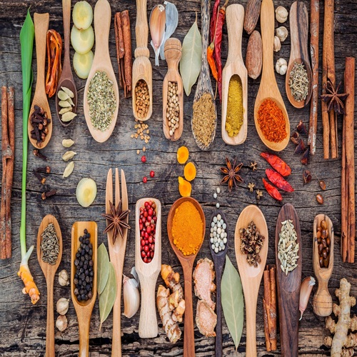

South Indian Spices
South Indian food uses a variety of spices to enhance flavor and aroma. Here are some common spices and their uses:
| Spice | Flavor | Dishes Used In | Health Benefits |
|---|---|---|---|
| Cardamom | Sweet, aromatic | Chai, desserts, biryani | Aids digestion, antioxidant |
| Cumin | Earthy, warm | Sambar, rice dishes, curry | Improves digestion |
| Mustard Seeds | Nutty, pungent | Sambar, curries, pickles | Rich in iron, anti-inflammatory |
| Turmeric | Warm, bitter | Curries, biryani | Anti-inflammatory, antioxidant |